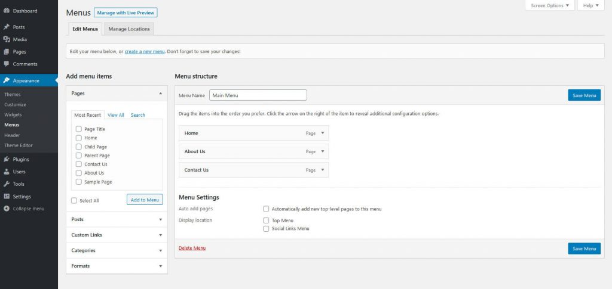
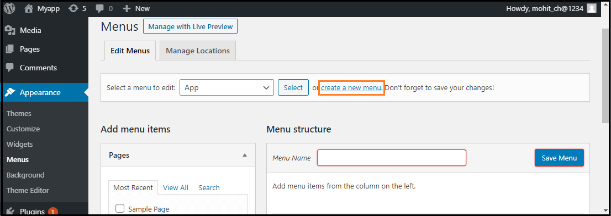
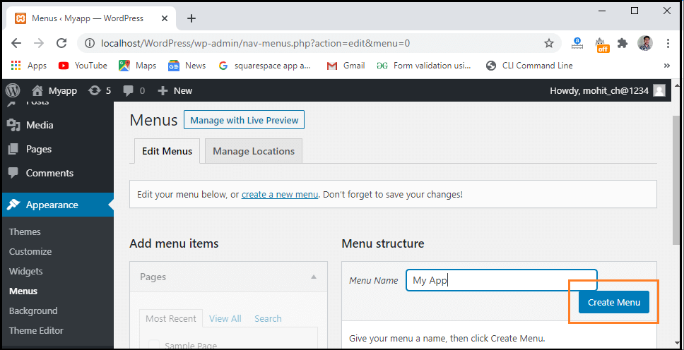
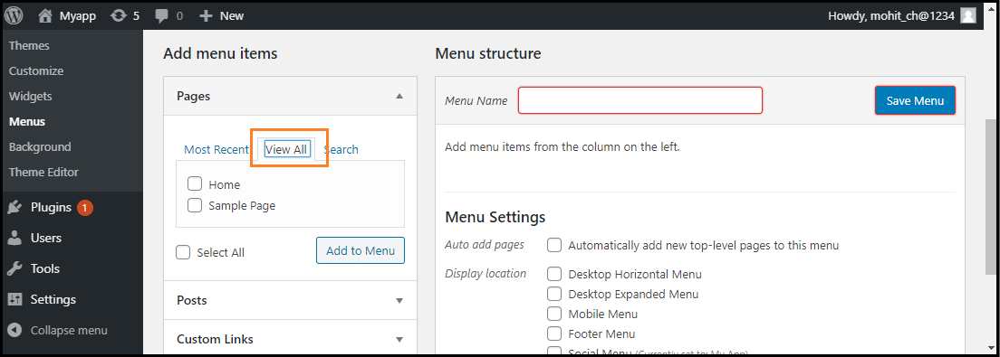
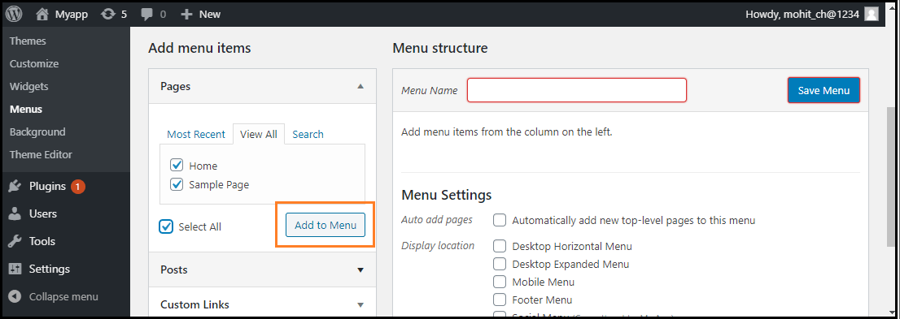
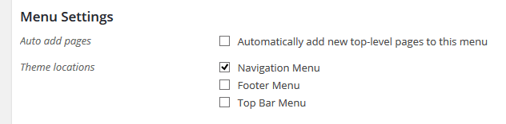
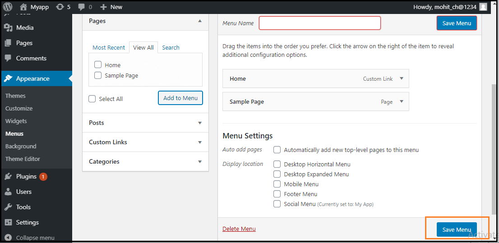

MENU SETTINGS PAGE
DASHBOARD >> APPEARANCE >> MENU
WordPress Menus
Menu is a list of options presented to the user. They are mostly used as a navigation building method on WordPress websites. Usually, the common content management system's installation is followed by a default menu that provides links to pages at the top level. These menus can be used at the top of the sites with links. It is generally used as a horizontal menu with links like home, email, contact, or pages.
The Menus setting screen allows the user to create and manage menus for their WordPress theme to display. Once a menu is created, you can add pages, posts, categories, tags, and numerous other content types. As with widgets, plugins can add new custom post types that can allow you to add them to a menu if configured to do so. You can easily create menus through the drag and drop WordPress feature.
On Clicking Menus option, Your WordPress Menu dashboard screen will look something like this:
Like widget areas, menu locations are also theme dependent. Themes can provide different locations to show the menu. If there are multiple locations to show menus, you can create a separate menu for every location if you wish.
Add New Menu
To create new menu , choose the "Create a new menu" option shown in the red rectangular box at the top of the page.
Once you’ve entered new menu in the "Menu Name" box, click on the "Create Menu" button to create a menu.
Adding Menu Items
To add menu item, Find the pane entitled Pages and choose Choose the "View All" link to see a list of all recently published pages.
Once you’ve selected the item via the checkbox, click on the "Add to Menu".
Once you’ve added menu item , Go to the bottom of the page and find the Menu Settings, to choose the location .
After that, click on "Save Menu" button. .
Deleting a Menu Item
If we want to delete an item form the menu, we can use the following steps:
- First, find the menu items that we want to delete in the menu editor window.
- Next, click the arrow icon at the top right corner of the menu item.
- Click on the "Remove" option. The menu item or box will be removed immediately.
Creating Multi-Level Menus
WordPress Menu Editor helps us to build a multi-level menu using the "drag and drop" interface. We can drag the menu items up or down to change the order you want to appear in the WordPress menu. We can also drag menu items left or right to build sub-levels in the Menu.
If we want to create a menu item a subordinate of another, it is required to place the "child" under its "parent" and then drag it slightly to the right. If we want to create a multi-level menu, we can use the following steps:
- Firstly, move the cursor over the "child" menu item.
- Drag it to the right while holding the left button of the mouse.
- Now, release the mouse button.
- Repeat all these items for every sub-menu items.
- To save the changes, click on the "Save Menu" button in the Menu Editor.